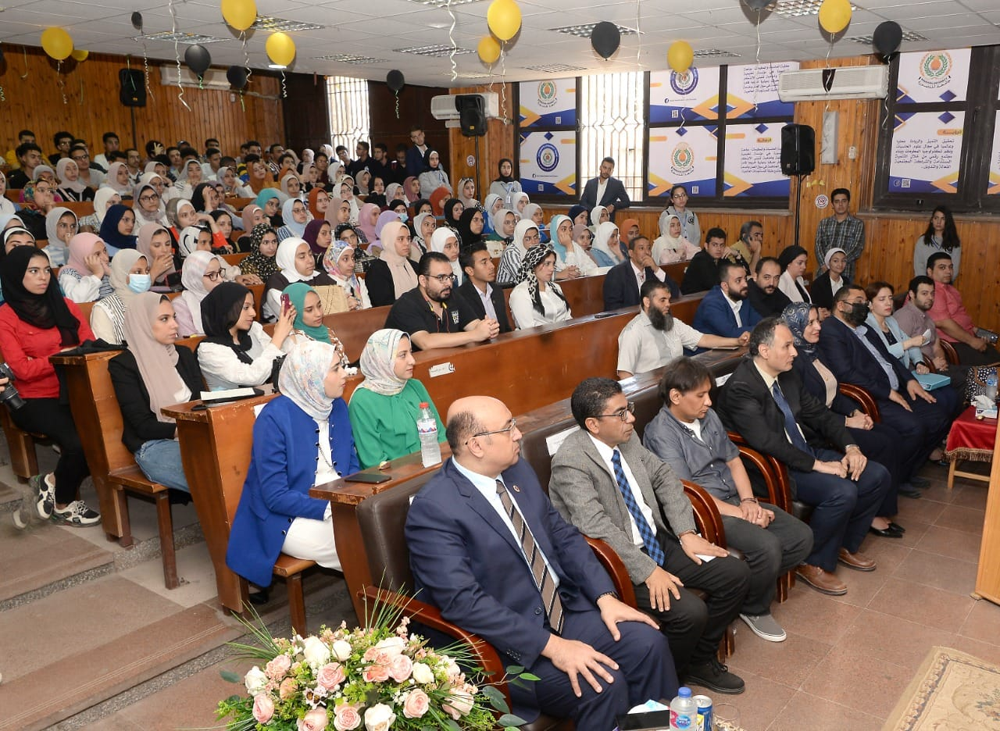
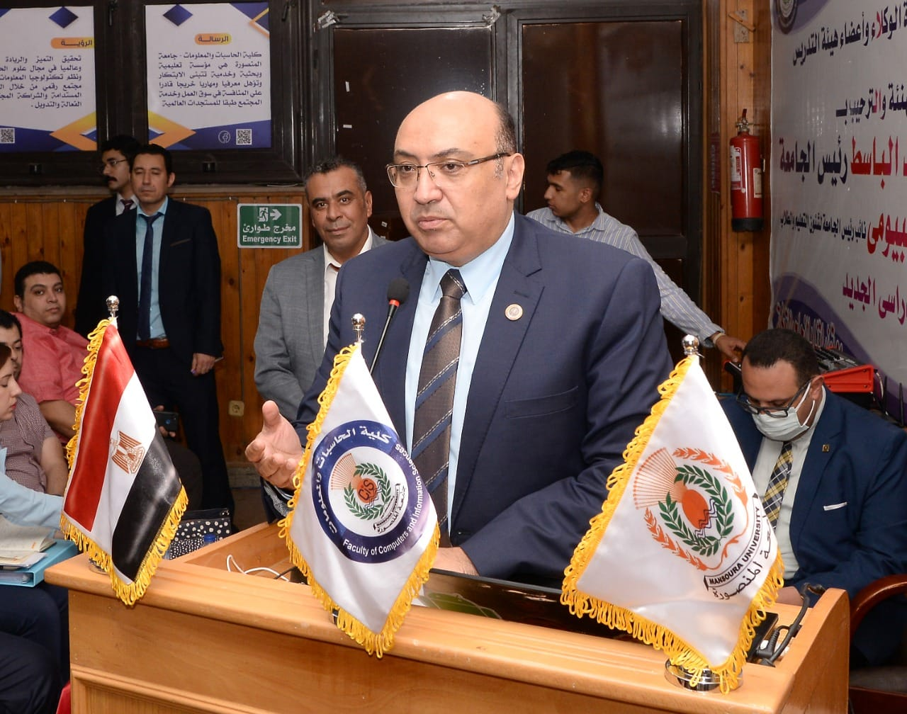
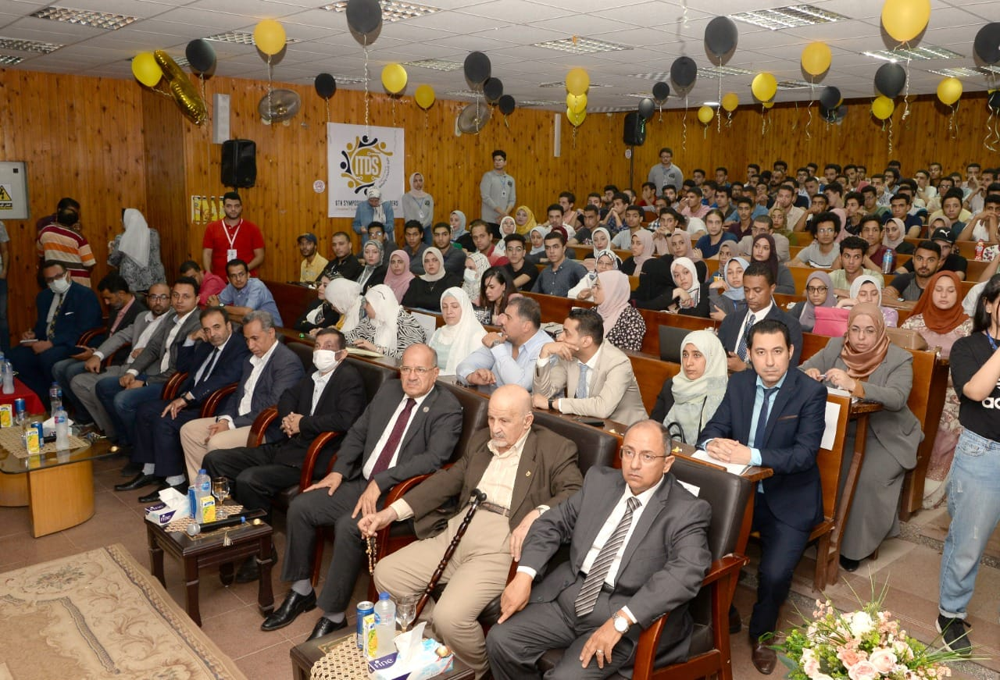
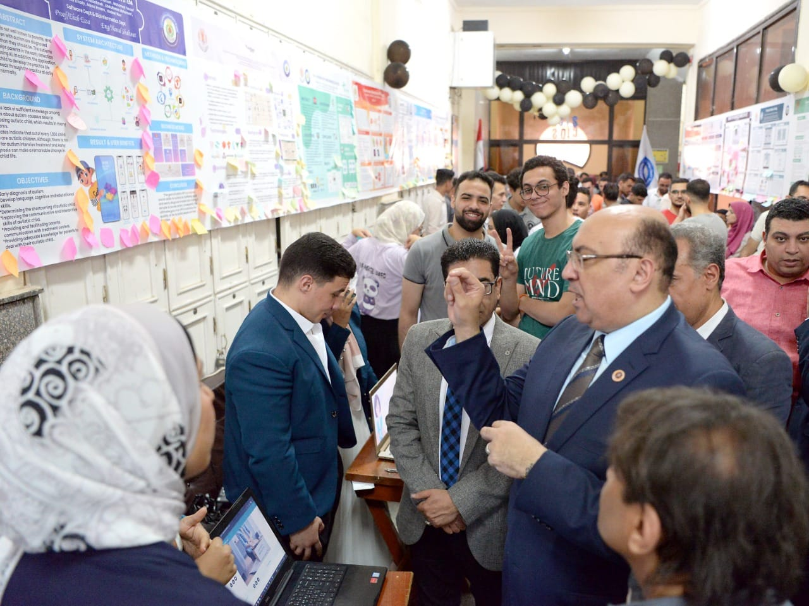
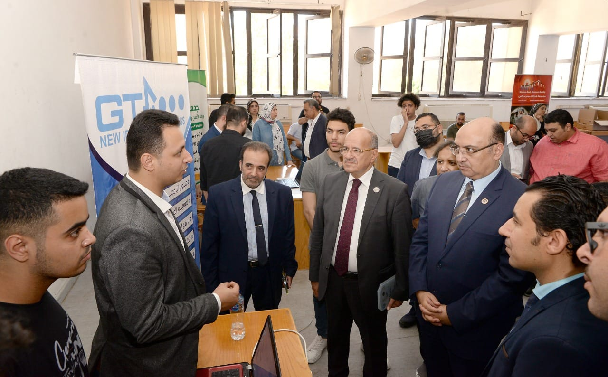
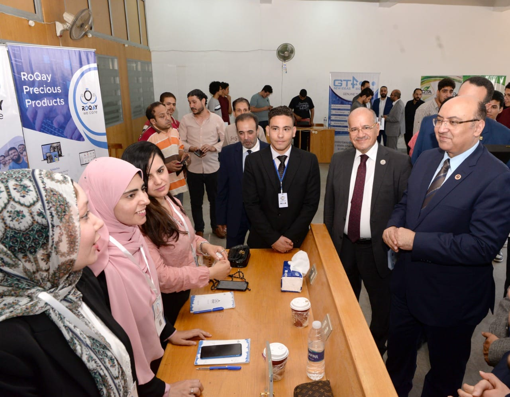

اخر الأخبار

نشأة كلية الحاسبات
28 june 2022
فعاليات الملتقى السادس لمطوري تكنولوجياالمعلومات
28 june 2022
مناقشات مشاريع التخرج
28 june 2022
فعاليات الكلية
1 / 8

زيارة نائب رئيس الجامعة للملتقى السادس لمطورى تكنولوجياالمعلومات
2 / 8

زيارة نائب رئيس الجامعة للملتقى السادس لمطورى تكنولوجياالمعلومات
3 / 8
زيارة نائب رئيس الجامعة للملتقى السادس لمطورى تكنولوجياالمعلومات
4 / 8

زيارة نائب رئيس الجامعة للملتقى السادس لمطورى تكنولوجياالمعلومات
5 / 8

زيارة نائب رئيس الجامعة للملتقى السادس لمطورى تكنولوجياالمعلومات
6 / 8

زيارة نائب رئيس الجامعة للملتقى السادس لمطورى تكنولوجياالمعلومات
7 / 8

زيارة نائب رئيس الجامعة للملتقى السادس لمطورى تكنولوجياالمعلومات
8 / 8

زيارة نائب رئيس الجامعة للملتقى السادس لمطورى تكنولوجياالمعلومات